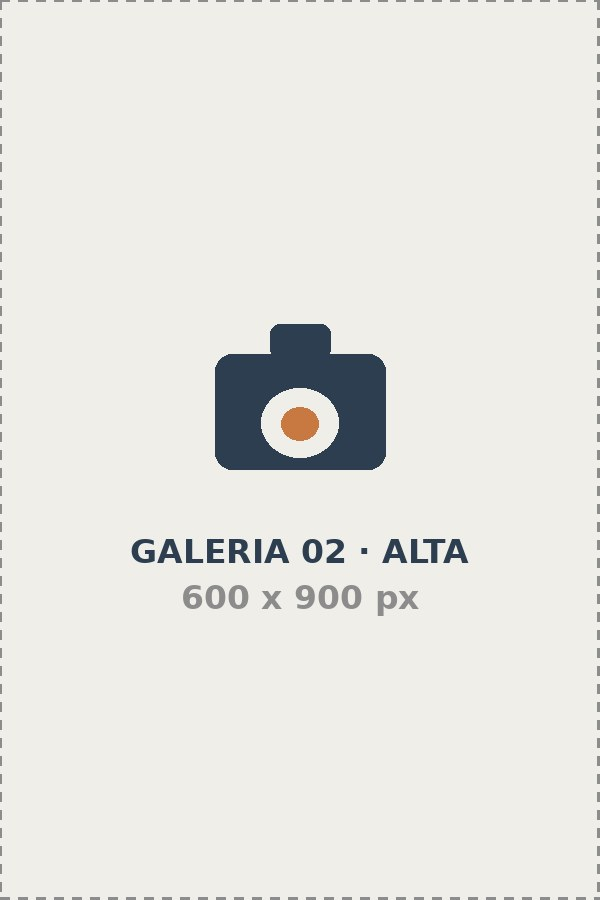
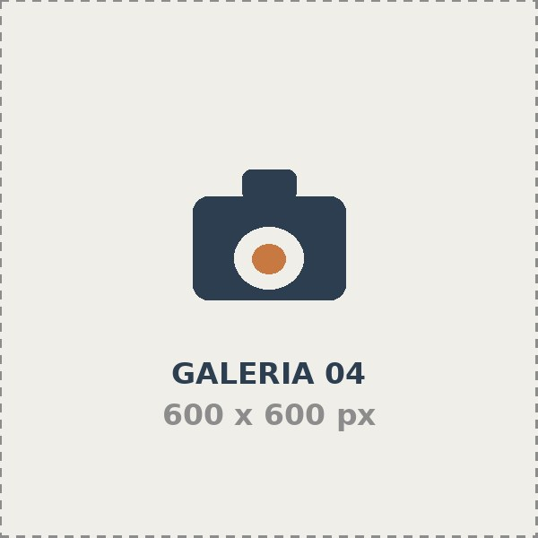
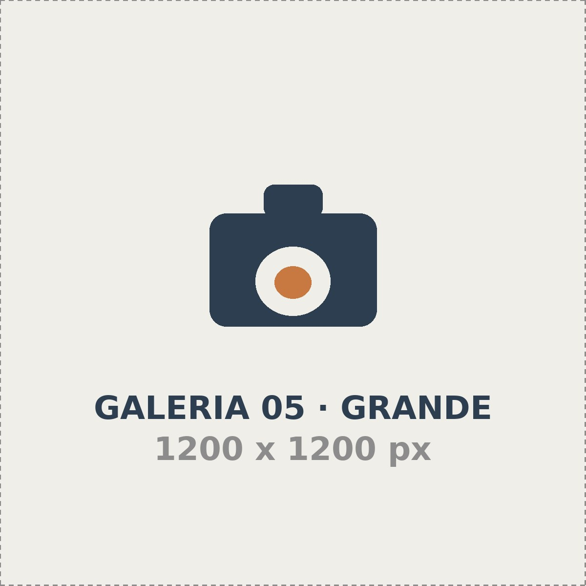
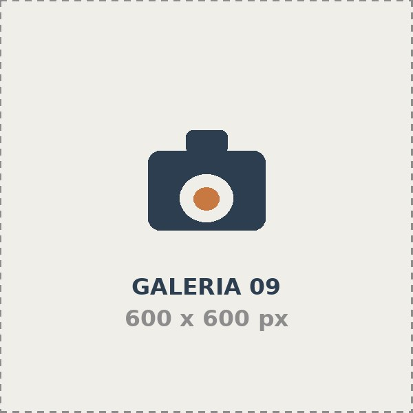

480
Seciones realizadas
12
Años e trayectoria
36
Marcas acompañadas
98%
Volveria a contratarnos
Explora por categoria
Cada enlace lleva a su sección dentro de esta misma pagina
Todo el trabajo







Retrato
Secciones Individuales, Familiares y de perfil profesional